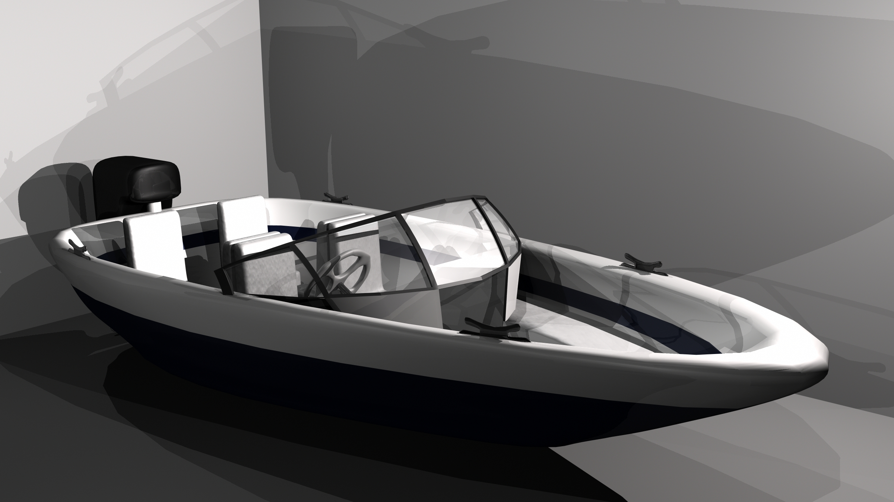
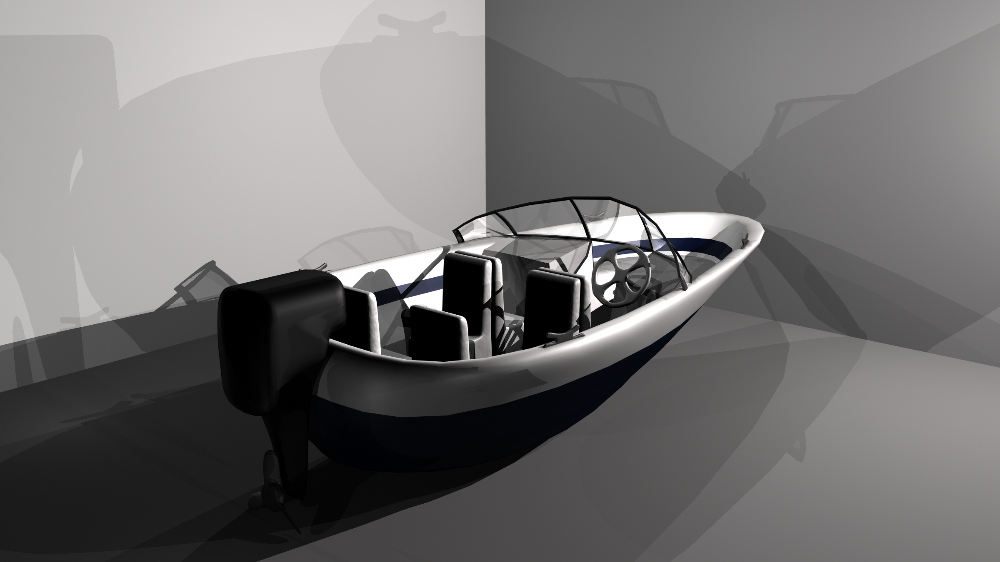
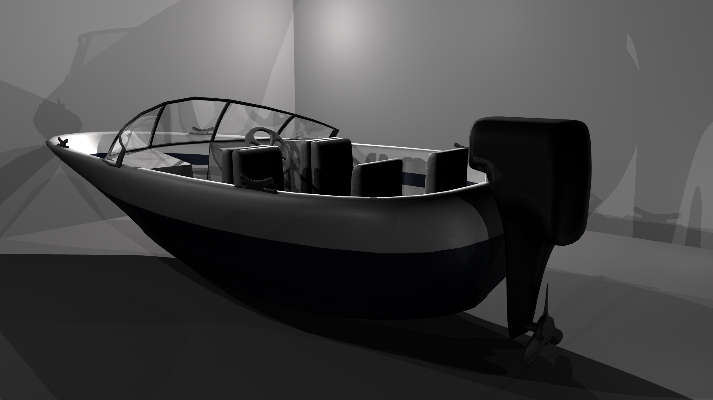
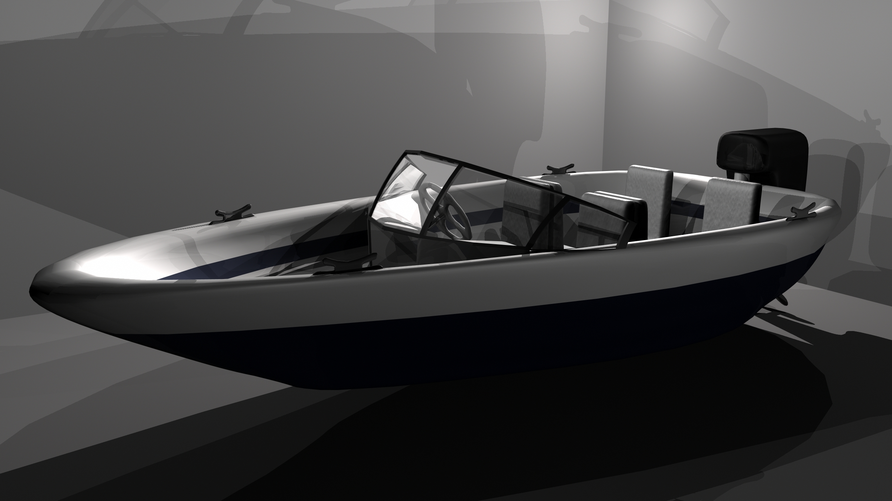

Boat
This is a scene that I used both for CAP3220 Introduction to Computer-Aided Modeling and CAP3034 Introduction to Computer-Aided Animation.
The assignment for CAP3220 was to create a vehicle using NURBS. I decided to model a boat based off one my family owns. The hull of the boat as well as the propellor and wheel were modelled using NURBS, and the rest modelled with polygons.
I reused the boat for a CAP3034 project that required using motion paths. In the video below, the boat is following a motion path.
(click a picture to enlarge)
|  |  |
|  |  |